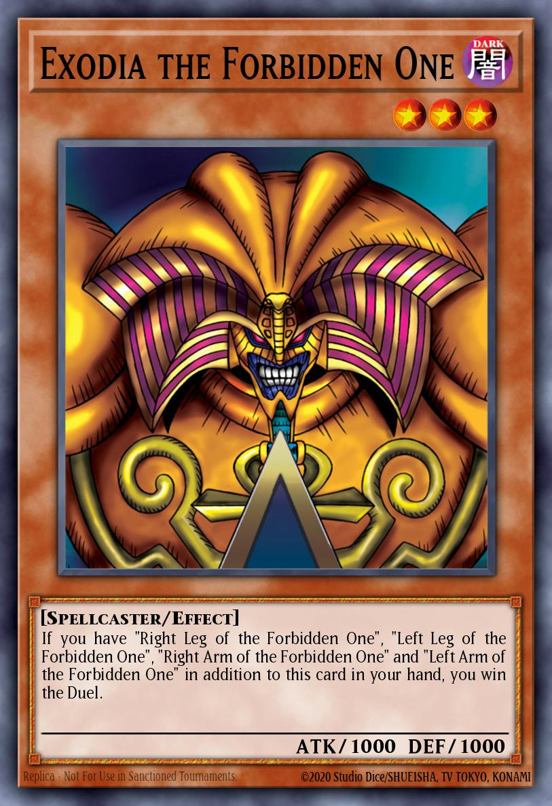

Yūgiōh
Dal manga di Kazuki Takahashi al record Guinness — il TCG che non si è mai fermato
Nato da un manga, diventato record mondiale
Yūgiōh nasce come manga di Kazuki Takahashi nel 1996 sulle pagine di Weekly Shōnen Jump. Il gioco di carte Duel Monsters, inventato per il manga, diventa reale nel 1999 quando Konami decide di produrlo. Nel 2009 il Guinness World Records certifica Yūgiōh come il gioco di carte collezionabili più venduto nella storia.
A differenza di Magic e Pokémon, Yūgiōh non ha meccaniche di mana o energia: i mostri si convocano in base al loro livello. Questa semplicità apparente nasconde profondità strategiche infinite, alimentate da un pool di oltre 10.000 carte.
Il mercato delle carte vintage giapponesi — le prime edizioni degli anni '99–'02 — ha raggiunto quotazioni da capogiro, con carte singole vendute a oltre 2 milioni di dollari.
La produzione Yūgiōh
Konami produce carte in Asia e Nord America con specifiche leggermente diverse. Le carte giapponesi sono considerate di qualità superiore dai collezionisti.
Le carte leggendarie
Dalle prime stampe giapponesi agli ultimi Prismatic Secret Rare: Yūgiōh ha prodotto alcune delle carte più desiderate dai collezionisti.


